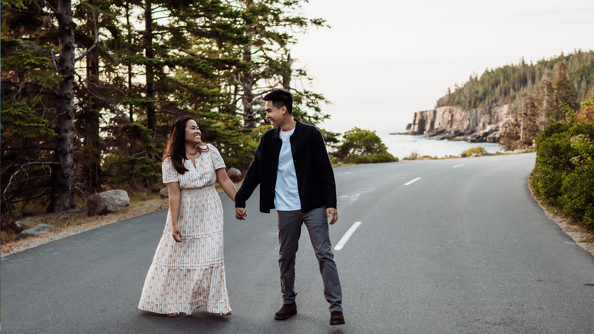

Our Story
It was a brilliant Saturday in late September. Dasha, a seasoned but casual hiker, had set out early to conquer the challenging "Skyline Ridge" trail. She loved the solitude and the feeling of accomplishment that came with reaching a summit. She had packed light, perhaps too light, confident she could complete the loop before sunset.
Renard, an avid mountaineer who treated hiking like a meditative discipline, was several hours into the same trail, enjoying the peace and sketching geological formations in his small notebook during breaks.
The problem? The official trail marker for the Skyline Ridge loop had been vandalized and incorrectly listed the remaining mileage. Both Dasha and Renard realized, independently and far too late, that the journey was going to take several hours longer than anticipated.
Dasha reached a high, narrow plateau just as the sun began its swift descent, painting the sky in fiery oranges and deep violets. The air was turning bitterly cold, and Dasha realized with a sinking heart that she hadn't brought a headlamp or enough water to comfortably manage a nighttime descent.
She was debating whether to backtrack, which felt equally risky, when she heard a low, frustrated groan from around a large boulder.
There, hunched over and meticulously adjusting a broken shoelace eyelet on his boot with a tiny multi-tool, was Renard. He looked up, his brow furrowed in concentration.
"Are you alright?" Dasha asked, her voice carried away slightly by the wind.
Renard straightened up, nodding. "The boot eyelet broke," he explained, holding up the tiny piece of metal. "And I'm guessing you also didn't account for the mythical extra three miles this trail apparently swallows up."
Dasha laughed, a nervous but genuine sound. "I thought it was just me. I feel like I've been walking since last Tuesday."
Renard took one look at Dasha's near-empty water bottle and lack of gear. He assessed the situation with the quiet, pragmatic efficiency of an architect planning for disaster.
"We can't descend safely without light," he stated simply. He unzipped his pack, revealing an assortment of professional-grade gear. "I have two hours of daylight remaining, two headlamps, and a purification tablet. We hike out together."
Dasha was instantly grateful, relieved, and slightly awestruck by his preparedness. "I'm Dasha," she said, offering a hand.
"Renard," he replied, shaking it firmly. "Stick close. We'll alternate leads. When the sun is gone, we focus purely on the ground in front of us."
The next few hours were an intense exercise in teamwork. Renard's logical planning and steady pace kept them moving efficiently, while Dasha's keen eyes and natural sense of direction helped them spot the often-faint trail markers in the twilight. They spoke little, focusing on the shared task of survival.
But in the quiet, focused intensity of the dark forest, with the beam of the headlamps cutting through the shadows, they learned about each other's strength, determination, and sense of humor—Renard's dry wit emerging only when they navigated a particularly tricky patch, and Dasha's ability to remain positive despite the chilling exhaustion.
When they finally reached the trailhead parking lot, safely guided by the dual beams of the headlamps, they collapsed onto the tailgate of Renard's truck, shivering but exhilarated.
"Well," Dasha said, taking a grateful sip of the hot tea Renard had magically produced from a thermos. "That was... a bonding experience."
Renard smiled, a genuine, tired smile that reached his eyes. "The best first date I've ever had," he said, handing her a small foil-wrapped energy bar. "Now, where's the closest diner? I think we've earned a massive breakfast, even if it is 10 PM."
The mountain had challenged them, but it had also brought them together, forging a connection as solid as the granite they had just climbed.